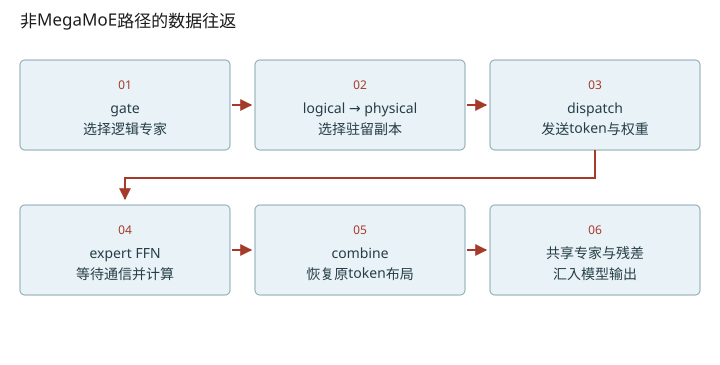
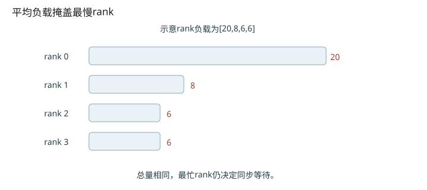

深入篇 31 / DeepInfer 专项精读 · 2026-11-08
MoE 与 EPLB：token 去哪里，专家副本放哪里
走通gate→dispatch→专家计算→combine，并手算一个冗余副本的放置与映射更新。
走通gate→dispatch→专家计算→combine，并手算一个冗余副本的放置与映射更新。

逻辑专家与物理副本要分开命名
logical expert是模型里的某个FFN；physical expert是它驻留在某个rank槽位上的副本。一个rank可以容纳多个physical experts。gate使用logical-to-physical映射及副本数，dispatch把token送往目标副本，combine依靠通信handle恢复原token对应关系并汇总。实际路径可能走MegaMoE融合分支，本课六步图讲的是可读的非MegaMoE路径。
复制阶段：先问复制谁最有效
用一个历史step、一层MoE、逻辑负载[100,20,20]、总物理槽4、每rank容量2。初始三个专家各一份，冗余一份给E0后每副本预计负载由100降到50；给E1/E2则峰值仍100。因此得到physical-to-logical=[0,1,2,0]、logical_count=[2,1,1]。这个load/count是策略的流量估计，不保证瞬时batch恰好均分。
放置阶段：再问副本放哪张卡
每副本负载为[50,20,20,50]；稳定降序按旧槽[0,3,1,2]遍历。依次放到rank0、rank1、rank0、rank1，结果每rank负载70，最终physical-to-logical=[0,1,0,2]。logical-to-physical变成E0:[0,2]、E1:[1,−1]、E2:[3,−1]；−1是无效副本位置。
每次尝试一个physical expert放到所有未满rank
选目标值最小的rank；同分选择较小rank ID
代码确实有for job_index in range(num_physical)，循环内部在layer/rank/history维度用张量计算；并非“没有Python循环”。贪心也不保证全局最优。位置重排后必须通过inverse permutation同步更新logical-to-physical，不能只移动权重不改索引。
触发与成本需要读运行时
_update_rearrangement按interval和prefill配置触发，此固定版本没有“负载偏斜超过阈值才触发”的判定。重排涉及统计聚合/all-reduce、专家权重搬运、映射和副本计数更新。不能擅自加上“迁KV”或“暂停接收全部请求”的服务行为。建议PR练习从验证映射双向一致、无效−1保持和固定容量约束入手。

改变变量，验证直觉
启用 JavaScript 后可交互；上面的图和下面的手算练习始终可读。
数值练习：先算，再核对
手算正文四个physical slots的最终顺序。运行 python labs/inference_lab.py eplb 核对单历史步的简化贪心结果；它不导入DeepInfer，也不复现完整多步policy。
闭卷检索
不要回看正文。答错后先解释原因，再重新打开这一课。
把结论落到源码
- 在policy.py找到稳定排序、capacity屏蔽、argmin及inverse permutation四处。
- 在运行时触发函数确认interval逻辑，再追_rearrange_experts中搬权重与更新映射的顺序。
以下行号由本地 vendor 文件生成；上游链接固定完整 commit，离线摘录可直接打开。
- deepinfer-moe-gate：deepinfer/model_executor/models/v4_modules/mlp.py L379–401 · 上游证据
- deepinfer-moe-communication：deepinfer/model_executor/models/v4_modules/mlp.py L461–511 · 上游证据
- deepinfer-moe-forward：deepinfer/model_executor/models/v4_modules/mlp.py L565–616 · 上游证据
- deepinfer-eplb-policy：deepinfer/model_executor/eplb/policy.py L12–140 · 上游证据
- deepinfer-eplb-trigger：deepinfer/model_executor/eplb/__init__.py L146–165 · 上游证据
- deepinfer-eplb-migration：deepinfer/model_executor/eplb/__init__.py L195–278 · 上游证据
优先阅读：本地 EPLB policy全文。
速查：形状与公式 · 三框架映射 · 术语表 · 复习与实战路线 · 4070 Ti本地实验
只在当前浏览器保存自评；不会自动写成已掌握的 learning record。